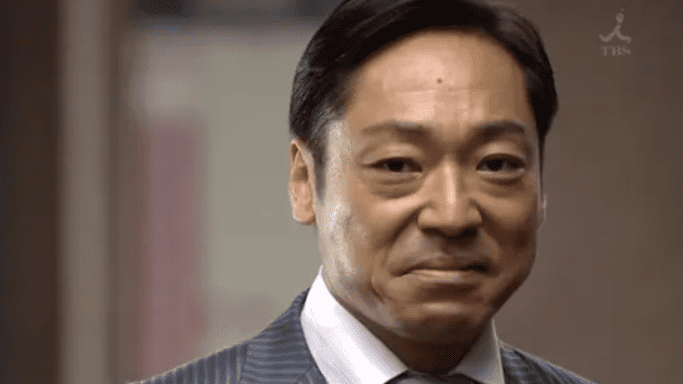
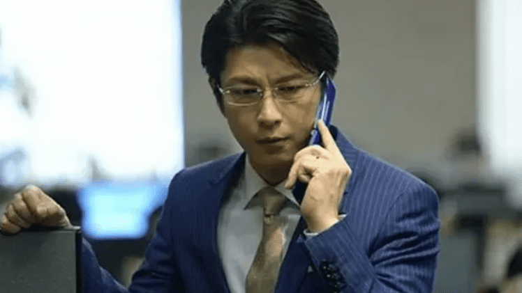

(日语:半沢直樹,英语:Hanzawa Naoki)是日本TBS电视台以池井户润所著系列小说《半泽直树系列》改编的连续剧,于周日剧场时段播出,由堺雅人领衔主演。共推出2季、1集番外篇。
| 类型 | 电视剧 |
|---|---|
| 原作 | 池井户润: 《修罗场》 《逆流而上》 《迷失一代的逆袭》 《银翼的伊卡洛斯》 |
| 编剧 | 八津弘幸 |
| 导演 | 福泽克雄 棚泽孝义 田中健太 |
| 主演 | 堺雅人（饰 半泽直树） 上户彩（饰 半泽花） 及川光博（饰 渡真利忍） 香川照之（饰 大和田晓） |
| 制作国家/地区 | 日本 |
| 播出日期 | 第一季：2013年7月7日 第二季：2020年7月19日 |
本剧描写于泡沫时期入行的银行员半泽直树，与银行内外的“敌人”战斗的故事。
受泡沫经济冲击的影响，原产业中央银行因有大笔不良债权而与东京第一银行合并为东京中央银行。合并后银行内部有着“旧东京第一”与“旧产业中央”的派系斗争。大阪西分行行长为了自身的利益和晋升，以及提升该分行的名声，因而裸贷给西大阪钢铁，而在融资一个月后即倒闭致使银行留下五亿元债务。分行长为了自身利益开始推卸责任给当时为融资课长的半泽，与此同时国税局亦开始介入事件，加上相关人士的不合作态度，半泽等人要收回五亿变得困难重重。然而在半泽等人锲而不舍的追回之下，五亿元债务最终成功给收回，并同时揪出幕后黑手。而后半泽以此为契机晋升东京本部，担任营业第二部次长一职。
晋升东京本部后一年,银行批出伊势岛饭店的融资200亿,但批出后没多久竟发现饭店有着120亿元的资金运用失误,再加上金融厅检查局要在两周内对东京中央银行进行监察,迫使银行必须设法使伊势岛饭店不被金融厅认为是问题企业,而避免银行名誉受损且被迫改组,于是伊势岛饭店社长与行长将此事托付因成功收回5亿元债务而备受嘱目的半泽直树来处理。
半泽获知电脑杂伎集团为实现公司自身发展,决定收购比自身实力强大的SPIRAL,东京中央证券营业企划部正全力准备电脑杂伎集团的收购方案,但由于不为人知的阴谋,电脑杂伎集团放弃与东京中央证券合作,转向与东京中央银行证券营业部合作。此后,SPIRAL的股票被恶意收购,SPIRAL危在旦夕,SPIRAL社长濑名对公司的控制权朝不保夕,半泽本人的银行职员生涯也遭遇挑战,面临调职风险。本篇的主线是:半泽所属的东京中央证券,如何与SPIRAL合作,对抗来自东京中央银行和电脑杂伎集团的恶意收购。
帝国航空因经营不善而陷入严重负债，回到东京中央银行任职的半泽受行长中野渡指派，进行帝国航空重建方案。同时间，执政党进政党在民望低迷下改组内阁，新任国土交通大臣白井亚希子宣布将针对帝国航空进行企业重建，并成立项目小组，而其中一项项目便是拟要求持有帝国航空债权的银行，一律放弃七成债权，一旦落实，将令东京中央银行蒙受巨大损失。半泽将如何在保有债权的情况下重建帝国航空，同时面对握有国家公权力的强大对手。然而东京中央银行里有高层意图阻扰重建方案进行，还支持政府要求的方案，这件事的背后疑似与东京中央银行暗藏的巨大黑幕有所关系……。
半泽直树
|
|
半泽花
|
|
|  | 大和田晓
|
|  | 渡真利忍
|